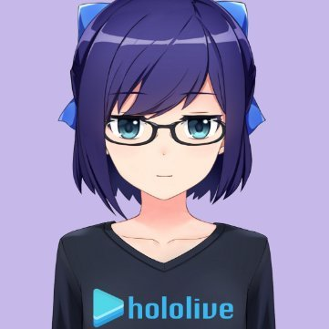
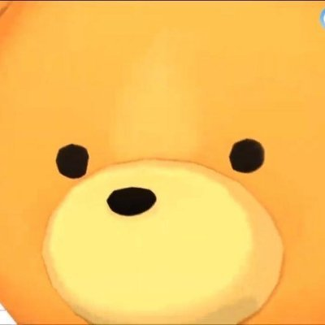

How's it going, Soratomos! It is Tokino Sora!
Debuting on September 7, 2017, she is the first Virtual Idol of Hololive Production.
She loves singing and horror games, and her dream has been to “hold a live concert at Yokohama Arena” since the very beginning.
She had her major debut at Victor Entertainment in March 2019. On her road to pro idol, she played a role in the TV show “Watanuki-san Chi” while also running a podcast known as “SoraAoto!” She also takes an active role in other genres. On October 6, 2019, she held her own live concert “Dream!”
This is a Japanese name; the family name is Tokino.
Tokino Sora (ときのそら, 時乃そら, 時乃空, Lit. Sky of Time) is a female Japanese Virtual YouTuber and the founder member of hololive. While she debuted alone way before generations were established, she is currently part of "hololive 0th gen" alongside fellow solo debutants: Roboco, Sakura Miko, Hoshimachi Suisei and AZKi.
| Basic Details | |
|---|---|
| Original Name: | ときのそら |
| Nickname(s): | The Goddess of hololive Tokki~ (とっきー) 〇〇's Sora (〇〇のそら) Sora-chan |
| Debut Date: | YouTube: 2017/09/07 Niconico: 2017/09/07 |
| Character Designer: | Illustration: Original: いかき Current: Ordan 3D Model: Current: schwarz |
| Affiliation: | hololive |
| Personal Details | |
| Gender: | Female |
| Age: | 20 years old |
| Birthday: | May 15th |
| Height: | 160cm |
| Zodiac Sign: | Taurus |
【Short.ver】はじめまして！自己紹介のそら【お初です】 Sora's introduction.
Tokino Sora is an easy-going, happy and comforting person whose personality has led many fans to call her “Tokino Sora Mama” (ときのそらママ) because of her motherly attitude. Born in Tokyo, she is the member in hololive who most closely fits the image of a "proper" idol, since most of the other members have become infamous for causing mayhem and goofing off. But in spite of the other idols grinding the stereotypical image of an idol to dust and beyond, many in hololive respect Sora and the genuineness of her personality to the point of seeing her as seiso or holy, to which she prefers to be seen as just an ordinary idol.
Unlike many other idol groups in the industry, and like many others in hololive, nothing about Sora's personality is faking purity. In fact, even in rare less-than-pure instances, such as losing her temper, she is often toothless and harmless if a bit stern. But generally, Sora's mindset in many ways resembles that of a well behaved, innocent child.
Sora loves horror games and she does not get scared by them. She also loves Rhythm games and live streaming for her fans. She is not very good at rote learning and Oogiri (a game consisted of giving funny answers to several themes). Additionally, she gets easily lost when someone mentions English wordplay jokes and slang terms in her chat and sometimes is teased with the name "Soda-chan" due to her fondness of sweets and because her design looks like a can of Pepsi, leading to the playful, comically cute responds of "Soda-chan Janai!" or "No Soda, No Soda!".
But when it comes to anything to do with rhythm and sound, Sora's passion for the art drives her to be quite the perfectionist. For example, in hololive's promotional campaign with medicinal candy brand e-ma, Sora would dance to the brand's theme song with better precision, allure, bounce and expressiveness than either Suisei and Aqua. In other instances, she perfectly sings a majority of the covers she does in her 【I tried to sing】series, some of which that are difficult for a normal person to sing as the vocals are mostly done in VOCALOID. She has published several covers, including collaborations with fellow VTubers and even the release of a debut album with a major record label.
True to her pure hearted nature, Sora dreams of holding a concert at Yokohama Arena, the city where her mother was born.
Sora is aided on her videos by her two friends A-chan and Ankimo.
|  | Yuujin A (友人A, Friend A) better known as A-chan (えーちゃん) is the person in charge of the technical aspects of Sora's live streams. She was originally spoken about or featured in a few videos but only illustrated as a roughly-drawn woman's face with glasses and a hair tie. In July 2018 she received a full design, and in November 2018 A-chan started her own Twitter account. On 7 September 2020 she got a new 3D model, the same date as Sora's third anniversary debut. |
|---|---|
|  | Ankimo (あん肝) is walking Teddy bear who accompanies her and mimic her movements during her livestreams. He is frequently depicted as being buried, due to technical difficulties made him to clip into the ground and he looks like he was buried on the floor. |
She opened her Twitter account on 29 June 2017 while her YouTube channel was created on 7 September 2017 and she started streaming on the same day.
On 17 October, she received her second 3D model, with a new hairstyle, with curls to the sides which became her standard and most recognized hairstyle, she also debuted her background.
On 26 October, to celebrate 100 subscribers, she received another model update, her blue hair pin was changed to yellow, the yellow ribbon on her blouse was changed to red and in which was described by A-chan to be a "camera update" Sora received jiggle physics.
On 31 October, her mascot Teddy bear "Ankimo" made its first appearance, Sora also appeared in a recolor of her standard model with bats to celebrate Halloween.
On 25 December, she received another outfit recolor, to celebrate the holidays with her clothes being mostly red, with a green ribbon.
On 5 January, she debuted another recolor, in this costume her clothes have a sparkling effect, complemented by a red had with a star and an interrogation sign on top.
On 14 February, she received a new costume, a casual outfit, with a pink blouse, skirt and a fuzzy brown coat.
On 18 May, she teased on her Twitter account an announcement for her next stream, the same day she debuted her third 3D model, in this model her outfit is updated, now with a star hairpin where her previous yellow one used to be, and a new one on the left side, probably the most prominent change was the change in her eye color from brown to blue. This model later received a costume update with even more ornaments, this costume is mainly used for Sora's concerts.
On 25 December, her new 3D model, received a color variant to celebrate the holidays, similar to her previous model.
On 27 December, she showcased another color variant, this time as a separate character named "Yuki no Sora", with light blue hair and dress and a snowflake hairpin on the opposite site of Sora's star hairpin. Originally Yuki didn't talk but she was reintroduced on another video later.
On 1 January, she debuted a new 3D costume, a kimono in celebration of the new year.
On 10 January, she announced that she would be releasing her first album Dreaming on 27 March 2019.
On 27 March, she debuted her first studio album titled Dreaming!
On 12 August, she announced on her Twitter account that she would get a swimsuit costume, on 14 August she debuted this costume during a stream.
On 6 October, she held her first live concert "Dream!"
On 19 December, she announced on her Twitter account preorders for her photo book "Sorabi Yori" (そらびより) and on 27 December she announced her new mini album "My loving" it is worth noticing that the official artwork of the album features Sora with her original brown eyes.
On 24 January along with the other hololive girls up to the third generation, she debuted an idol outfit that matches with the rest of the girls at hololive's 1st fes. Nonstop Story. As she previously had another idol outfit.
On 14 February her photo book "Sorabi Yori" (そらびより) was released.
On 24 March, she released her new mini album "My loving".
On 5 September, she announced on her Twitter account a conmemorative stream, celebrating the third anniversary since her debut. On 7 September, she held her conmemorative stream, remembering her evolution through the years, finally she debuted her fourth 3D model, her hair and eyes are more detailed, her hair also have improved movement, her updated outfit now include golden ornaments on the neck of her blouse, on her ribbon and shoes, the white "tail" of her skirt now have stars on the tips and the parts that go to the sides now resemble wings.
On 29 November, she held her second live concert "Parallel Time."
On 21 December, Sora participated on stage 1 of "hololive 2nd fes. Beyond the Stage."
On 5 January, Sora reached 600,000 subscribers on her YouTube channel.
On 1 March, she announced on her Twitter account that she would get a new costume.
On 3 March, Sora debuted her second costume using her fourth 3D model, in this casual costume Sora has her original brown eyes (althought concept illustration shows that she can have blue eyes as well) and her hair is now stylized with a ponytail, she wears a pink and white blouse, brazalets one with a little star and another with a little Ankimo head, and a brown long skirt accompanied by a brown belt and shoes with pink ribbons. Sora also has the option to wear glasses with this costume.
On 18 March, she reached 700,000 subscribers on her YouTube channel during a stream.
On 17 December 2018, she participated with other VTubers in the AR event Tubeout! at Tower Records Shibuya store.
On 27 November 2019, she made an appearance in hololive's collaboration with Azur Lane as one of the characters, alongside Nakiri Ayame, Ookami Mio, Natsuiro Matsuri, Murasaki Shion, Minato Aqua and Shirakami Fubuki, she was available from 27 November to 17 December.
On 28 January 2020, it was announced on Dengekionline that she would make an appearance in the game Neptunia Virtual Stars as one of the VTuber guest characters alongside Roboco, Sakura Miko, Shirakami Fubuki, Minato Aqua, Yuzuki Choco, Inugami Korone, Shirogane Noel and Houshou Marine.
On 24 November 2020, Taito Online Crane's Twitter account announced a collaboration with Sora in which, she would appear in a collectable cushion for a limited time, the event started on 27 November.
On 25 December 2020, again in Taito Online Crane's Twitter account it was announced a second collaboration with Sora, this time big plushies modelled after her were limited time prizes, the plushie was available starting from 4 January.
On 8 January 2021, hololive's Twitter account announced the production of a Tokino Sora figurine wearing her swimsuit, the figurine is being produced by Bandai's brand Gashapon.
As previously stated her mascot is a Teddy bear named "Ankimo".
Her fanbase is officially called "Sora-tomo" (そらとも) likely from "Sora no tomodachi", or Sora's friends.
Sora prefers to be called simply "Sora-chan" by her fans.
Sora is close friends with AZKi, they have sung on stage, MVs and in EPs multiple times as the unit SorAZ, while it is somewhat rare for AZKi to collab with other hololive members, Sora and her collab from time to time in each other's channels. Sora also helped her when AZKi finally decided to join the hololive JP Minecraft server.
On 21 February 2019, she announced that she would be part of the main cast of the upcoming TV Tokyo dorama Watanuki-san Chi No playing as "Watanuki Ichika" alongside Hibiki Ao, and newcomer Sarugakucho Futaba. The show has two seasons.
She likes drawing, singing, playing the piano, sweet things and cats, she claims to be bad at sports like running and swimming.
Her favorite subject are Japanese and music but she claims to be bad at English and science. Trying to improve her English, Sora started doing English study streams on 10 December 2020.
そらとものみんな、元気？ときのそらです！
(How are you, all of my Sorafriends? It's Tokino Sora!)